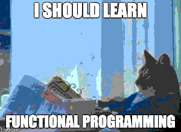

Resolução de ano novo: aprender uma nova forma de programar
O mercado está exigindo padrões cada vez mais elevados de qualidade na produção de software. O paradigma funcional é como um novo marco (novo para quem não conhece, pois vem de longe) na qualidade do processo de desenvolvimento.

Não é exatamente uma resolução de ano novo, nem de fim de ano. É algo que vem me incomodando há um bom tempo. Com tantas linguagens novas surgindo, dá vontade de "participar do movimento".
Programo principalmente em Python e Perl. Ambas tem novidades interessantes. Finalmente o Python3 está se impondo sobre a versão 2, finalmente a comunidade Perl lançou oficialmente o Perl6.
Ainda em Python, tem um livro muito interessante do Luciano Ramalho (Fluent Python), que poderia ocupar-me com novas possibilidades na linguagem. Apesar das boas práticas e técnicas ensinadas, do aprofundamento na linguagem, ainda é Python...
Tem o mundo JavaScript, que pode ser usado de cabo a rabo em um projeto WEB. Tem o Ruby que é cool. Cada uma dessas eu iniciei mas não me empolguei. Porque não tinha nada novo, nenhuma mudança de paradigma, apenas questiúnculas que não acrescentam nada.
Acompanhando blogs sobre programação, resolvi ver o que era Lisp e isso me fez conhecer um mundo novo de muitas possibilidades.
Um jeito novo de programar, de pensar, de organizar os pensamentos e de atacar os problemas.
No Brasil, começam os anúncios de vagas para programação funcional. Haskell e Clojure parecem ser a bola da vez. Haskel com um excelente compilador, Clojure valendo-se da JVM. Ambos com um REPL (Read Eval Print Loop).
De sistemas WEB a computação científca e financeira, ambos estão presentes em sistemas os mais críticos.
Todas as linguagens citadas vem buscando inspiração e possibilitando o uso de alguns conceitos de programação funcional. Até Java está nessa.
Mas não há porque abandonar tudo por um novo modo de programar. Python e Perl seguem mantendo meu sustento, e, grata surpresa, C++ se apresenta como a minha opção para uma nova linguagem imperativa, e que também me possibilita programar até sistemas WEB, além de me dar o suficiente de C para matar as saudades.
Se mais alguém aí está confuso sobre que linguagem de programação aprender, talvez o seu problema seja o mesmo que eu enfrentei: acabou o fascínio pelo modo imperativo de programar. Eu até acho, que após alguns anos, você tende a pensar em alguma coisa funcional.
Portanto, o seu problema pode ser "que novo paradigma de programação vou aprender" e não apenas "que nova linguagem de programação vou aprender".
Aqui seguem alguns links sobre o que foi tratado no nesse texto:
- Comunidade HaskellBR
- Comunidade Clojure
- Um caso de uso no mercado financeiro nacional
- Uma entrevista com o criador do Clojure
- What is Funcional Programming
- The Nature of Lisp
- Functional Programming should be your #1 priority for 2015
- Aprender Haskell será um grande bem para você
- Vários textos de Paul Graham sobre Lisp